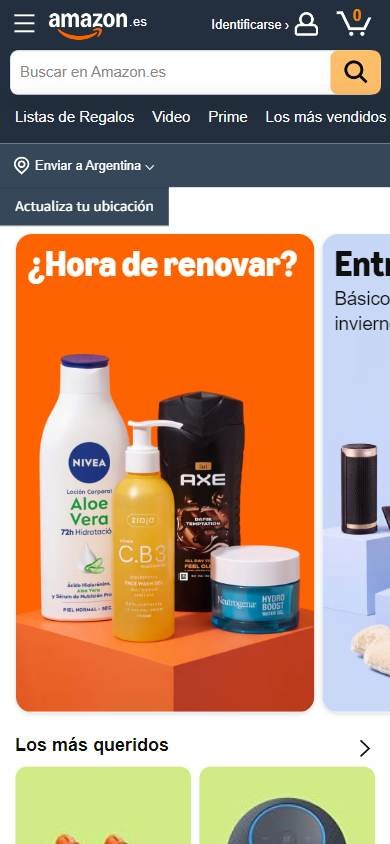
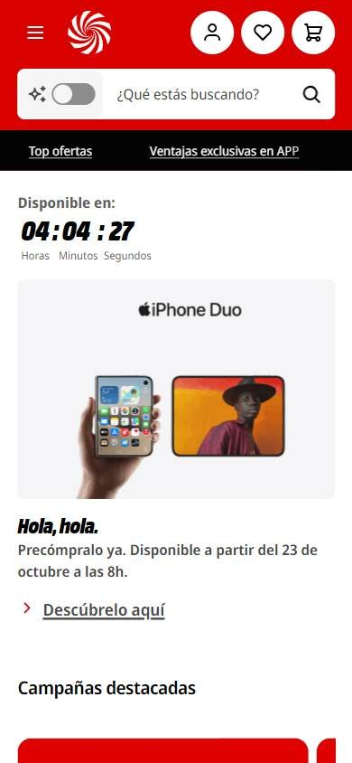
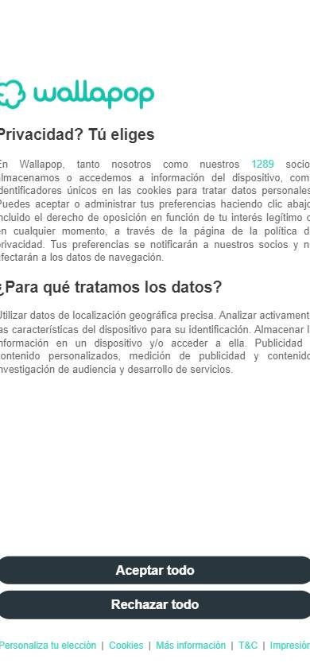

Tienda online que compite por buen precio
Los seleccionados
Los tres sitios más visitados de España, según estadísticas de tráfico.
En resumen: lo que hacen los líderes
La pantalla de inicio de cada uno



Estilo visual
Colores, imágenes, tipografía y cuánta información muestran.
Tu estilo visual debería…
- Tu color de marca bien presente; si querés un tono cercano, esquinas redondeadas y más aire.
Lo que tienen en común: Cada uno se apoya en su color de marca; los que venden a particulares usan más aire y esquinas redondeadas.
La paleta de cada uno
Medida sobre la primera pantalla. Los colores de marca salen del header; el resto muestra cuánto espacio ocupa cada color.
Así lo resuelve cada uno
Ficha comparativa
| Aspecto | Amazon España | MediaMarkt España | Wallapop |
|---|---|---|---|
| Paleta | Variada: tarjetas multicolor | Acotada: rojo + negro + blanco | Acotada: verde agua + blanco |
| Imágenes | Fotos de producto medianas | Fotos de producto grandes | Foto grande de persona |
| Esquinas | Rectas | Redondeadas | Muy redondeadas |
| Densidad | Alta | Media | Baja |
Header
La franja de arriba con el logo y los accesos.
Tu header debería…
- Íconos de cuenta, favoritos y carrito a la derecha, en círculos si querés más presencia.
Lo que tienen en común: Logo a la izquierda, buscador ancho en el centro y cuenta y carrito a la derecha; MediaMarkt y Amazon pintan el header de su color.
Así lo resuelve cada uno


Ficha comparativa
| Aspecto | Amazon España | MediaMarkt España | Wallapop |
|---|---|---|---|
| Fondo | Negro | Rojo de marca | Blanco |
| Logo | A la izquierda | A la izquierda | Verde, a la izquierda |
| A la derecha | Cuenta, pedidos y cesta | Tienda, cuenta, favoritos y carrito (íconos en círculo) | «Regístrate o inicia sesión» y botón verde «Vender» |
Buscador
La barra para buscar.
Tu buscador debería…
- Buscador ancho y redondeado con la pregunta «¿Qué estás buscando?».
Lo que tienen en común: Buscador ancho, blanco o gris claro, redondeado en dos de los tres.
Así lo resuelve cada uno


Ficha comparativa
| Aspecto | Amazon España | MediaMarkt España | Wallapop |
|---|---|---|---|
| TamañoIgual en todos | Protagonista | Protagonista | Protagonista |
| Estilo | Blanco con selector y lupa naranja | Blanco redondeado, con búsqueda con IA | Gris claro redondeado |
| Texto de ayuda | «Buscar en Amazon.es» | «¿Qué estás buscando?» | «Buscar en Wallapop» |
Menú y categorías
Cómo se organizan las secciones.
Tu menú y categorías debería…
- Botón «Todas las categorías» con ícono de menú a la izquierda y las 5 o 6 principales al lado.
Lo que tienen en común: Los tres usan un botón «Todas las categorías» con ícono de menú y, al lado, las categorías más importantes.
Así lo resuelve cada uno

Ficha comparativa
| Aspecto | Amazon España | MediaMarkt España | Wallapop |
|---|---|---|---|
| Formato | «Todo» con ícono de menú + accesos | «Todas las categorías» + categorías destacadas | «Todas las categorías» con ícono de menú + categorías |
Primera pantalla
Lo primero que se ve debajo del header.
Tu primera pantalla debería…
- Un banner con una sola propuesta clara y un botón de acción.
Lo que tienen en común: Cada uno destaca su propuesta: ofertas, lanzamientos con cuenta regresiva o la promesa de vender fácil.
Así lo resuelve cada uno
Ficha comparativa
| Aspecto | Amazon España | MediaMarkt España | Wallapop |
|---|---|---|---|
| Formato | Grilla de tarjetas de ofertas | Lanzamiento con cuenta regresiva + campañas | Foto de persona + titular y botón |
| Botón | — | «Descúbrelo aquí» | «Vender ahora» |